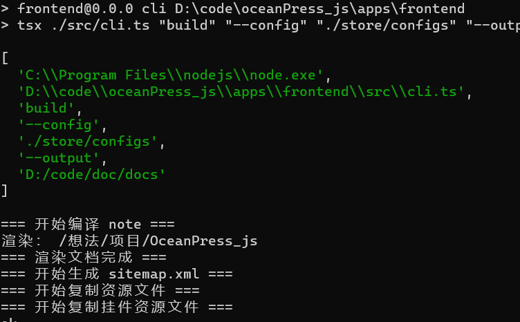
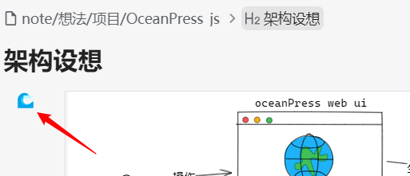
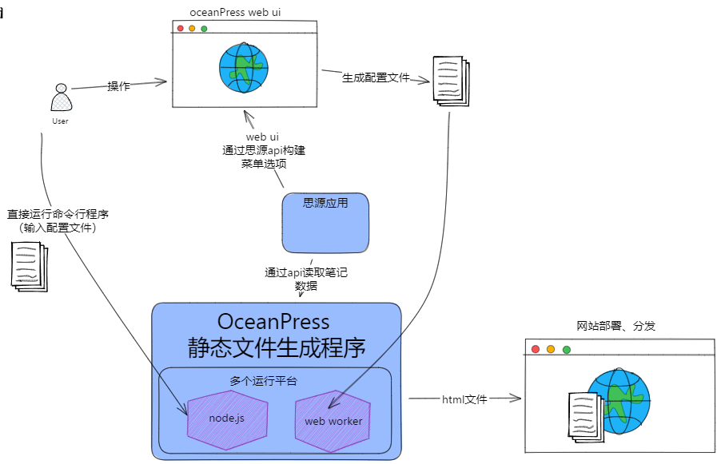
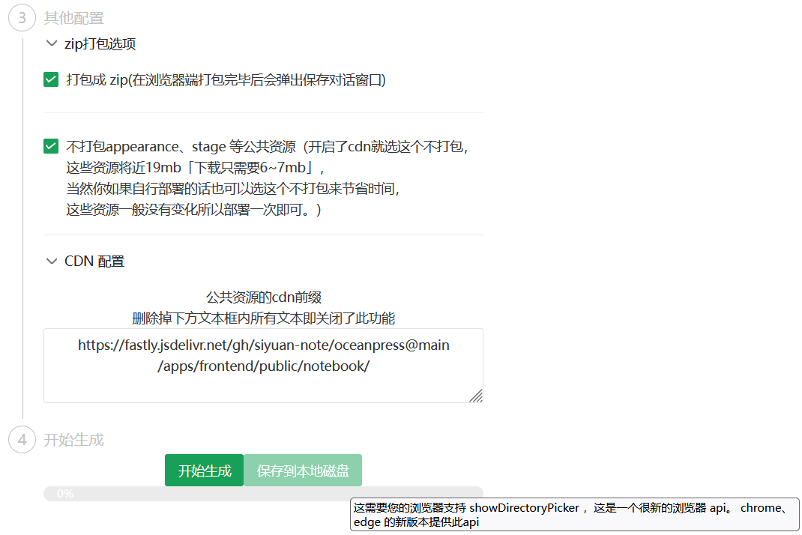
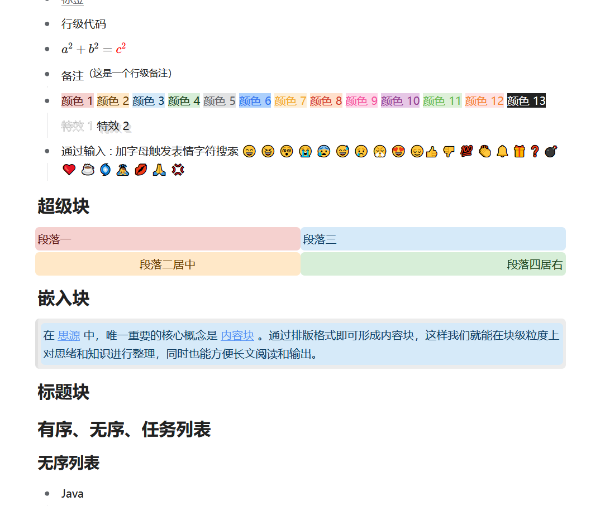
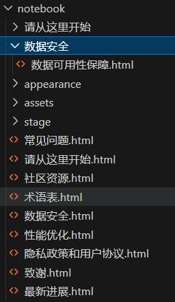
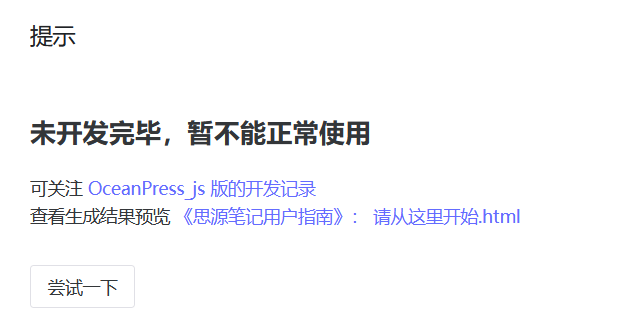
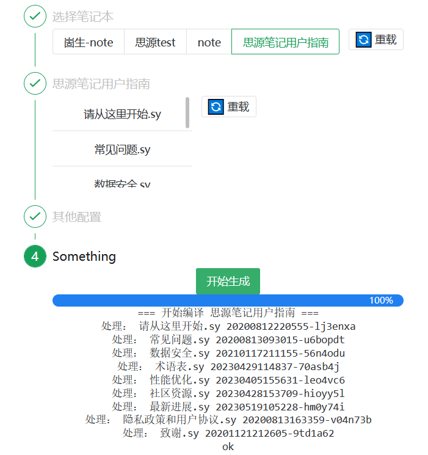
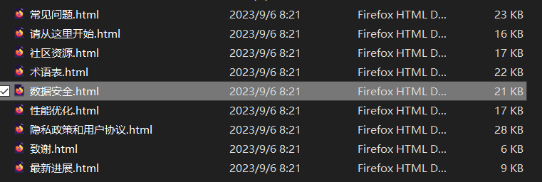
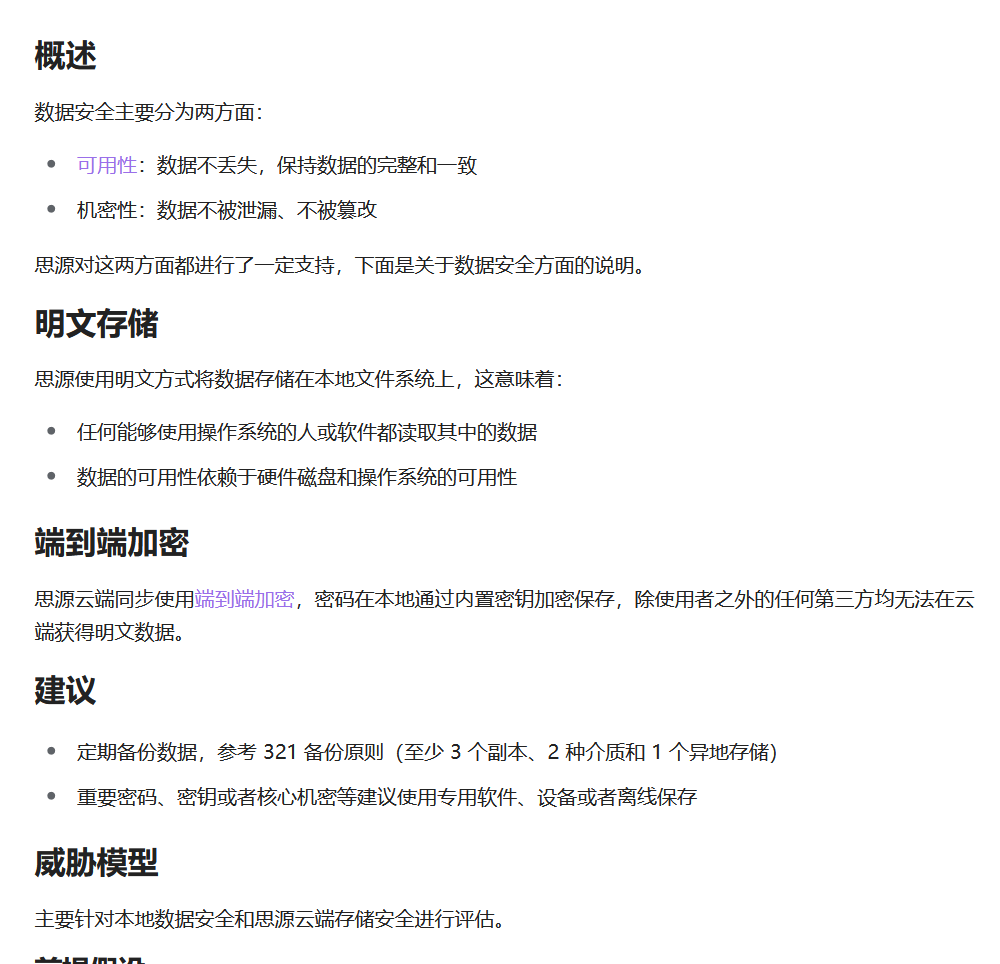

🌊
OceanPress_js
这是一款从思源笔记本生成一个静态站点的工具，直接访问
oceanpress.heartstack.space
即可使用
 logo
logo
logo
为什么开发OceanPress
我是一个理想化的人，我相信开发这个软件能够促进人们在'真正的互联网'分享自己笔记的文章，我相信这能够让中文互联网变得更美好
我经历过中国互联网最好的那个时代，我不希望那种互助精神就此消亡。
使用说明
web站点在线生成
使用 cli 程序
安装与更新
需要提前准备好 node 运行环境 ：
各种系统安装node
md
# 下载源码
git clone https://github.com/siyuan-note/oceanpress.git
# 安装依赖
cd oceanpress
npm i -g pnpm
pnpm install
# 更新
git pull
pnpm install
# 查看命令提示,例如：
pnpm cli server --help
-----
Options:
-c, --config 指定配置文件的位置
-h, --host web服务绑定到的地址 (default: "127.0.0.1")
-p, --port web服务绑定到的端口 (default: "80")
--cache 配置为 true 时开启缓存,默认为 false 不开启缓存 (default: "false")
生成静态站点
bash
# 运行cli程序 ,config 为配置文件地址，output为输出地址
# 配置文件可从在线网站生成 https://oceanpress.heartstack.space
pnpm cli build --config "./store/configs" --output "./store/output"
生成静态站点的命令效果图
运行代理站点
在不开启缓存的情况下，用户每次刷新页面都是由OceanPress调用思源内核api即时生成的最新文档（速度会比较慢）
开启缓存后，每次请求所涉及的文档都会被缓存，不重启的情况下无法看到最新修改
md
pnpm cli server --config "./store/configs"
### 你应当能看到类似如下的输出
> frontend@0.0.0 cli D:\code\oceanPress_js\apps\frontend
> tsx ./src/cli.ts "server" "--config" "./store/configs"
[
'C:\\Program Files\\nodejs\\node.exe',
'D:\\code\\oceanPress_js\\apps\\frontend\\src\\cli.ts',
'server',
'--config',
'./store/configs'
]
Listening on :{"address":"127.0.0.1","family":"IPv4","port":80}
 代理站点的效果图
代理站点的效果图
代理站点的效果图
为挂件生成快照
1.
安装插件
2.
挂件
的左上角会出现一个🌊标识，如果是灰色的则代表没有生成过该
挂件
的快照，点击🌊即可更新快照（不会自动生成，需要手动点击更新）

例如下方就是使用的挂件 excalidraw 绘制的图，然后使用OceanPress插件保存的快照，
架构设想
架构设想

架构设想
功能设想
下面各色标识的含义
绿色表示完全可用
黄色表示部分可用
无色
==
大饼
兼容思源绝大部分效果 🎉
全平台随用随走
基于
node
.
js
的全平台运行能力
基于浏览器网页的全平台、随用随走
支持挂件 (需要挂件本身适配)
通过插件对挂件生成快照，
甚至不适配的都能让你能看见预览效果(需要安装插件，只是能看...)
在网页中显示该快照
适配OceanPress的挂件支持
一键部署
网页上传zip到自定义接口
基于
node
.
js
命令行自动编译、部署
生成chm单体文件，便于类似分发帮助文档这种需求
SEO 友好，可以放心修改文章名称，移
动块，不用担心分享的链接无法访问到
内容(在笔记中删掉了那我没办法
通过 preload 来实现
基于块id的永久链接
仅支持文档块和标题块，否则体积过大
可读路径的302重写
上面方法无法定位的情况下通过文档
名进行推荐
自动生成 sitemap.xml
更易于复制粘贴分享
许多网站的编辑器都是能够拉取图片的，但有一些的实现是网站后端进行
拉取(避免前端跨域无法拉取)，所以部署到公网的文章可以直接选中片
段粘贴图片，而内网的则不行
小、快、省
通过对输出html结构优化，能够输出体积更小，解析更快的源文件
可选通过cdn加载公共资源文件
更节省服务器流量
更快的js、css加载速度
可选的图片优化、压缩、生成预览
支持 RSS，例如:最近更新.rss、推荐阅
读.rss
只需要在文档名后面加上.
rss
就会对文章内通过块
引用
和嵌入块查
询到的块生成
rss
.xml指向
配置功能
云端存储配置
支持配置自定义代码
增量编译
待办 准备进行的更新
修复
题图
未居中全部显示
题图
似乎没有被计入
资源
引用，导致不会进行复制
顶端导航链接
为嵌入块导航链接
memo显示
反链功能
空文档的子文档列表
数据库渲染（等稳定了再说）
优化html结构：修改li、ul 等的渲染实现，使其复制到其他编辑器依然能够正常解析
浮窗功能
为标题块提供可复制的链接指向
更新日志
preview.10
💥重磅更新
：
为挂件生成快照
更完善的增量编译功能
在文档 a
引用
文档 b 的情况下
b发生变化也会触发a文档的编译
通过插件对挂件生成快照，
甚至不适配的都能让你能看见预览效果(需要安装插件，只是能看...)
在网页中显示该快照
渲染嵌入块中的标题块后面的非标题块
fix 任意元素上悬停都显示文档标题
preview.7 2023-10-8
新增选项，开启时文档不会处于增量编译状态，方便开发调试
嵌入
文档块
时，顶部大片空白（题头图导致的），应该去掉他
fix 一些嵌入查询块的sql执行失败
fix 没有渲染文档标题
2023-10-5
文档增量编译功能
2023-9-25
这个配置项现在看起来有点子多咯

2023-9-19
2023-9-18
支持通过浏览器api直接写到磁盘

2023-9-16
3️⃣完成sy文件的渲染功能

1️⃣初步全量生成html

2️⃣添加生成预览
在本地生成思源笔记用户指南的html

2023
-9-6
1️⃣ 简单的前端页面

2️⃣导出文档的技术验证

3️⃣直接复用思源的导出样式
